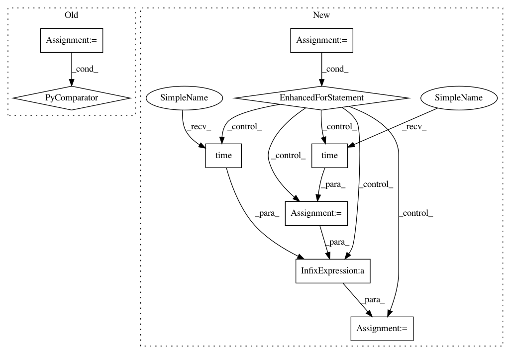

1e7af1285c2c506d1c73f6e6cb612a26b5cf3da6,tensorboard/backend/application.py,TensorBoardWSGI,_serve_plugins_listing,#TensorBoardWSGI#Any#,225
Before Change
return http_util.Respond(
request,
{plugin.plugin_name: plugin.is_active() for plugin in self._plugins},
"application/json")
def __call__(self, environ, start_response): // pylint: disable=invalid-name
After Change
A werkzeug.Response object.
response = {}
for plugin in self._plugins:
start = time.time()
response[plugin.plugin_name] = plugin.is_active()
elapsed = time.time() - start
tf.logging.info(
"Plugin listing: is_active() for %s took %0.3f seconds",
plugin.plugin_name, elapsed)
return http_util.Respond(request, response, "application/json")
def __call__(self, environ, start_response): // pylint: disable=invalid-name
Central entry point for the TensorBoard application.
In pattern: SUPERPATTERN
Frequency: 3
Non-data size: 9
Instances
Project Name: tensorflow/tensorboard
Commit Name: 1e7af1285c2c506d1c73f6e6cb612a26b5cf3da6
Time: 2017-10-19
Author: nfelt@users.noreply.github.com
File Name: tensorboard/backend/application.py
Class Name: TensorBoardWSGI
Method Name: _serve_plugins_listing
Project Name: KaiyangZhou/deep-person-reid
Commit Name: b88d36cd9c8056e15607a40f5d10a9072ab84b22
Time: 2018-07-06
Author: k.zhou@qmul.ac.uk
File Name: train_imgreid_xent.py
Class Name:
Method Name: main
Project Name: KaiyangZhou/deep-person-reid
Commit Name: b88d36cd9c8056e15607a40f5d10a9072ab84b22
Time: 2018-07-06
Author: k.zhou@qmul.ac.uk
File Name: train_vidreid_xent.py
Class Name:
Method Name: main